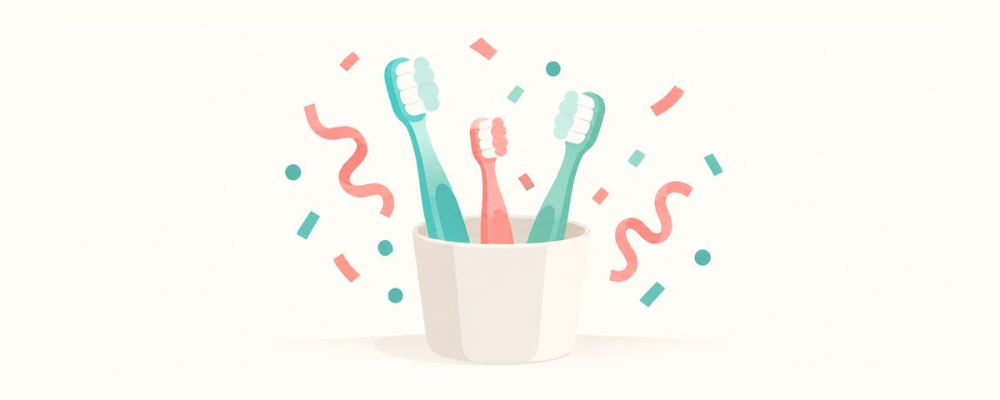

新年のお口の習慣チェック：歯ブラシの交換、2分間の歯みがき、今年の歯科健診の予約
新しい年には、歯ブラシを新しくして、歯みがきの時間を2分間はかり、今年の健診を前もって予約しておきましょう。家族のお口の習慣を見直す三つのポイントをまとめました。
ひと目でチェック
- 歯ブラシは3〜4か月ごとに新しく
- タイマーを使って1日2回、2分間みがく
- 健診は今のうちに予約。ふつうは6か月ごと
新しい年を迎えると、運動や読書のような大きな目標を立てることがありますよね。歯の健康も同じですが、おおげさな計画より、小さな三つのことを変えるだけで十分です。新年に、わが家のお口の習慣を見直す方法をまとめました。
小さな三つの習慣が、一年を守ってくれます
新年のチェックの三つは、歯ブラシ、歯みがきの時間、健診の予定です。
一つめは、歯ブラシです。歯ブラシは3〜4か月ごとに新しくします。毎日使っていると毛先が外側に開いてきますが、毛先の開いた歯ブラシは歯の表面にきちんと当たらず、よくみがけません。子どもは歯ブラシをかんだり強く押しつけたりすることが多いので、もっと早く開いてしまうこともあります。日にちに関係なく、毛先が開いたらそのときに交換してあげてください。
二つめは、歯みがきの時間です。1日2回、一回2分間ずつみがきます。実際にはかってみると、2分間は思ったより長いものです。時間をはからないと、前歯を何回かこするだけで終わりがちで、奥歯のかむ面や内側の面に歯垢（歯につくねばねばした細菌の膜）が残ってしまいます。
三つめは、健診の予定です。定期健診は、ふつう6か月ごとに一回です。むし歯は初期には痛まないので、痛くなる前に見つけることが健診の目的です。新年のうちに予約しておけば、忙しい毎日にまぎれて忘れてしまうことを減らせます。長期休みや年末年始のように予定が集中する時期を避けて日にちを選べば、先延ばしになることも減ります。
この三つがよいのは、わざわざ時間をつくらなくてもいいことです。歯ブラシは一度替えればよく、歯みがきはいつもしていることに時間をはかるだけ、予約は電話一本で終わります。小さな変化なので、一年じゅう続けやすいのです。
新年の最初の週に、これだけやってみましょう
- 家族みんなの歯ブラシを新しくして、次の交換日をカレンダーに書いておきます。子どもの歯ブラシは、お口の大きさに合わせてヘッドが小さく毛のやわらかいものを選びます。
- タイマーや2分間の歌を決めておいて、1日2回みがきます。子どもに自分でタイマーを押してもらうと、遊びのように楽しめます。
- フッ素入り歯みがき粉は、3歳未満は米粒くらい、3歳以上はグリーンピース大を使います。
- 歯と歯がくっついているところがあれば、1日1回フロスを使います。小さな子には保護者がしてあげます。
- 今年の定期健診を前もって予約します。上半期の健診を予約するときに、下半期の日にちも一緒にメモしておくとよいでしょう。
歯ブラシの管理もあわせて見直してみましょう。歯ブラシは水ですすいだあと立てて乾かし、ほかの家族の歯ブラシとふれないように置きます。キャップをかぶせたり、閉じたケースに入れたりすると、よく乾きません。歯ブラシは、家族どうしでも共有しないようにします。
よくある誤解のひとつは、強く、長くこするほどよくみがける、という考えです。力を入れると毛先が早く開くだけで、歯ぐきが痛くなることもあります。軽い力で、その代わり2分間すみずみまでみがくことのほうが大切です。
保護者がよくしてしまう失敗は、子どもがひとりでみがけるようになると、完全に手を離してしまうことです。子どもが自分でみがいていても、まだていねいにみがくのが難しい年齢なら、最後に保護者がもう一度仕上げみがきをしてあげてください。新年の習慣を長続きさせるには、保護者も一緒に2分間のタイマーをつけて、並んでみがくのがいちばんの方法です。
よくある質問
歯ブラシがまだきれいに見えても、交換したほうがいいですか？
見た目はきれいでも、3〜4か月使うと毛先がへたってきます。交換日をカレンダーに書いておけば、忘れずに替えられます。
子どもが2分間もちません。
最初から2分間続けられなくても大丈夫です。歌一曲に合わせて、上、下、右、左の順に分けてみがくと、時間はあっというまに過ぎます。
きょうだいで歯ブラシを一緒に使ってもいいですか？
歯ブラシは家族どうしでも共有しません。色や形の違う歯ブラシを選び、歯ブラシ立てでもふれ合わないように間をあけておけば、まちがえません。
子どもの歯がまだくっついていなければ、フロスはしなくてもいいですか？
はい。歯と歯のあいだにすき間があれば、歯ブラシが届きます。歯と歯がくっつき始めたら、そのときから1日1回フロスを使いましょう。
こんなときは新年最初の予定に歯科を
- 前回の健診から6か月以上たっているとき
- 子どもが、痛い歯やしみる歯があると言うとき
- 歯に茶色や黒い点が見えるとき
- 歯みがきのときに、歯ぐきからよく血が出るとき
- 新しい歯ブラシに替えても、子どもがみがくたびに痛がるとき
必要な時期にお知らせで受け取りましょう
歯のカレンダーアプリにお子さんの生年月日（または出産予定日）を入力すると、これらの記事が必要な時期にお知らせとして届きます。無料で、登録も不要です。
出典
- ADA · Toothbrushes (ADA Oral Health Topics) (2024)
このアプリの情報は一般的な教育を目的としたもので、歯科医師による診療に代わるものではありません。お子さまの状態については歯科医師にご相談ください。